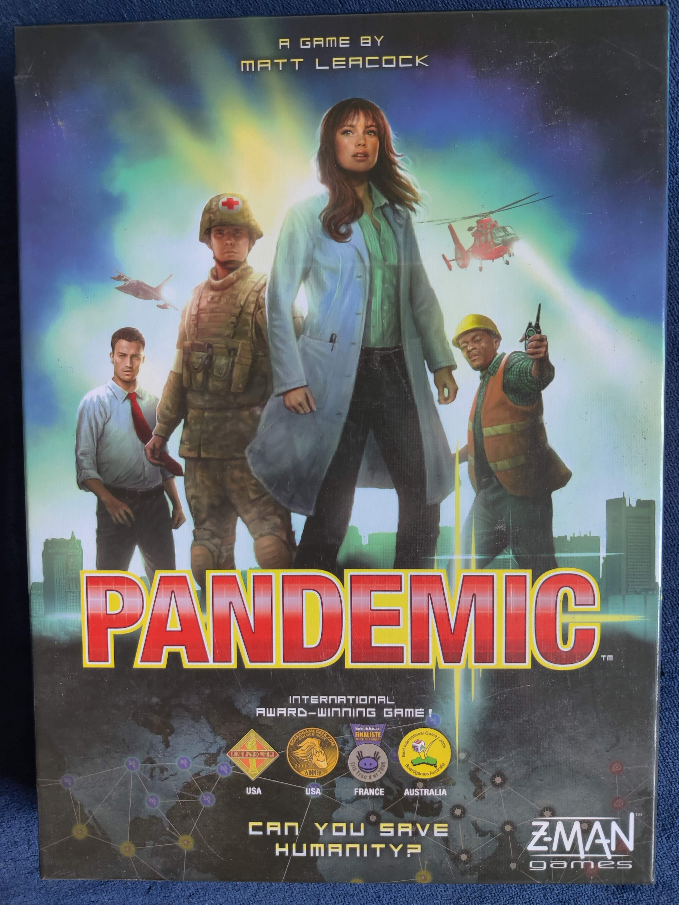
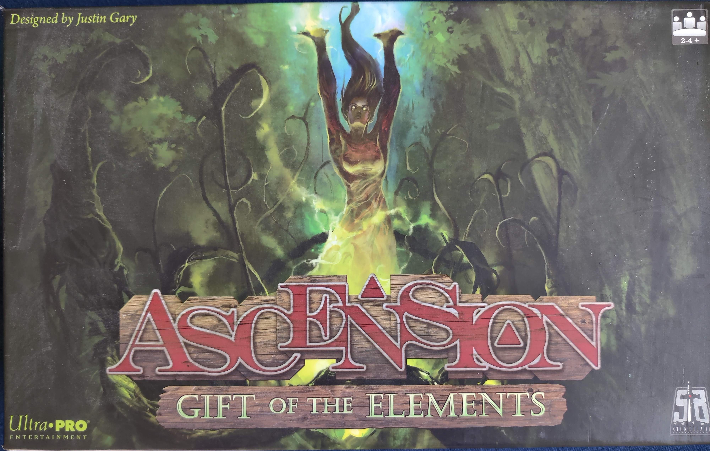
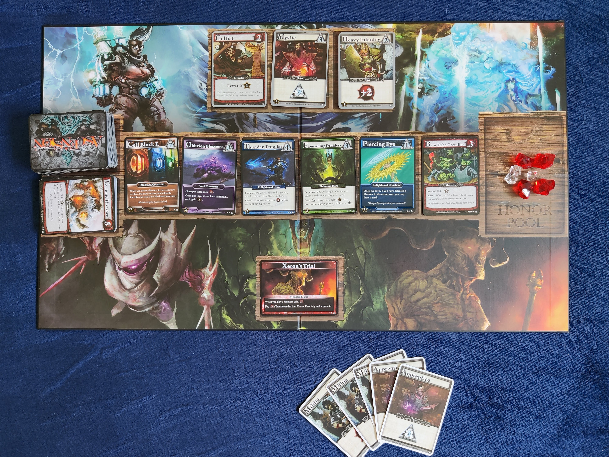
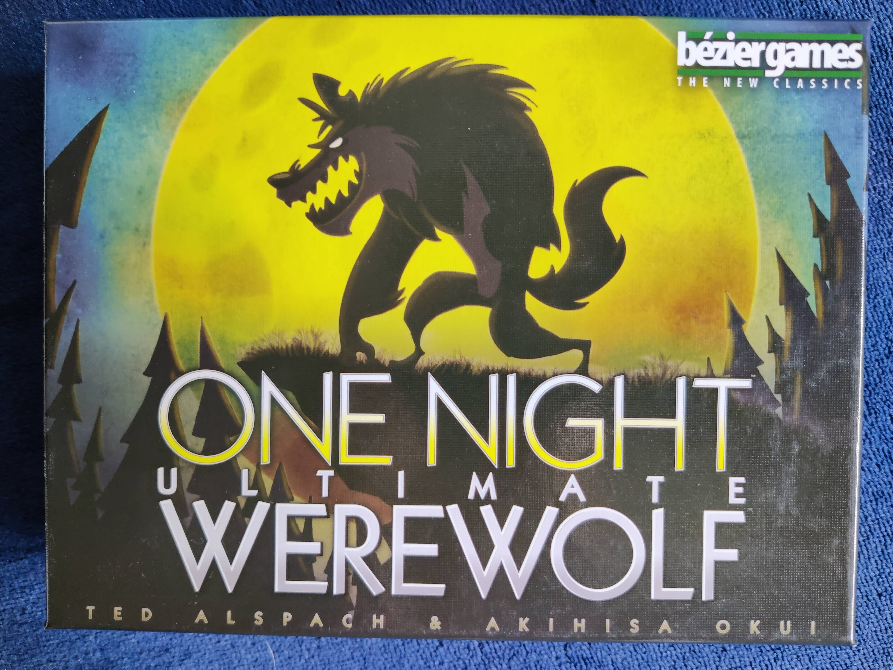
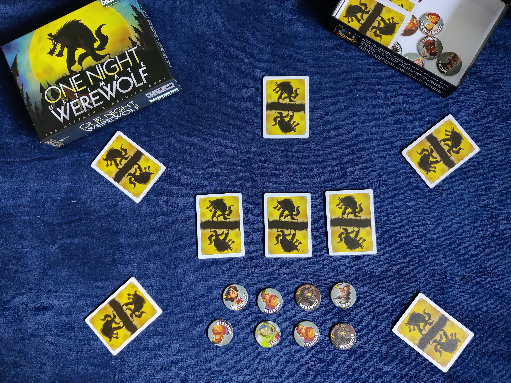
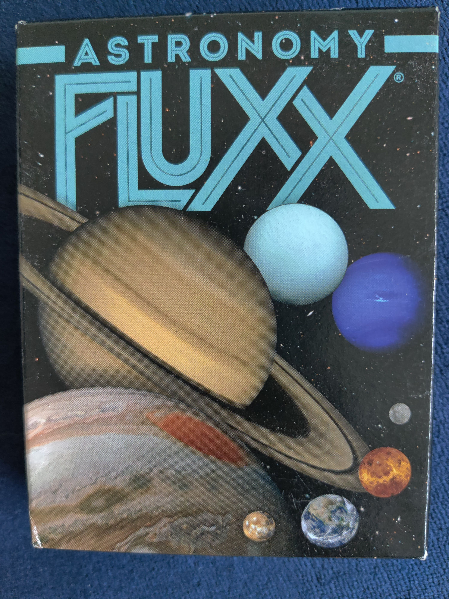
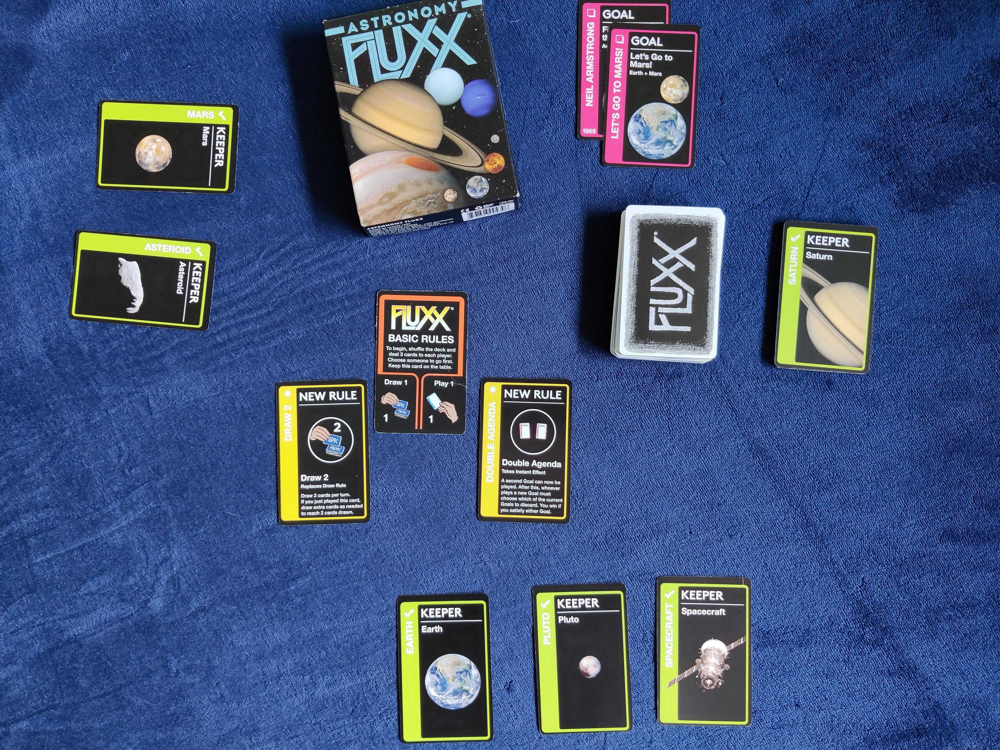
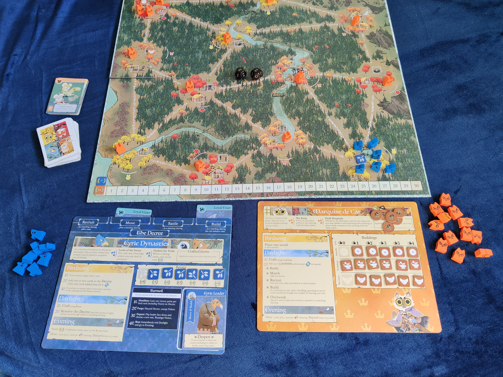

Type:CooperativePlay Time:Under an hourPlayers:2-4
Pandemic is a game created by Matt Leacock in 2007. With many expansions, and new editions,
Pandemic is a great game for any type of person. Working as a team of scientists, each with a
different role, the players fight oubreaks of viruses all over the world.

Set Up:
The set up is fairly simple, each player receives a character card with spacial roles.
The board is set up with one research center, and a set amount of viruses already in effect.
Ascension is a fantasy deck building game created by Justin Gary, Rob DOugherty, and Brian Kibler.
The players start out with a small deck of cards, which grows stronger and bigger throughout the game.
The unique part of this game is the strategy of building personalized decks. The goal of the
game is to earn the most honor which can be achieved by gaining/playing cards and defeating monsters.
There are many expansions and editions of this game making it easy to find a version that fits you.\
My personal favorite is Dreamscape.

Set up:
Each playing recieves a small deck and the rest of the cards are placehold
on a stack and layed out on the board.

This game is super fun, easy to play, and quick making it a great game for any type of player.
Published by Bezier Games, One Night Ultimate Werewolf is a fun and easy game to play
with a group of friends. Since it is so quick to pick up and play, it is a great game for all types of
people. Each player recieves a role; some may be werewolves, villagers, tricksters. The goal is to discover who
amongst the group are werewolfs. It is a fun game of deception and deduction.

Set Up:
The set up is quick. Everyone recieves a role/character and keeps it secret. Be sure to
download the app that helps with each phase of the game.

Check out the game and learn to read your friends!
Flux
Type:PartyPlay Time:10-30 MinutesPlayers:2-6
Fluxx was created by Andrew and Kristin Looney and since the original release, many versions have been published.
I own the Astronomy version, however the gameplay is consistant with any version. This is a fun and quick game to play with
friends of any game level. It is also a fun game to pull out at family gatherings. Fluxx is a card game is ever evolving rules and
goals. These are dependent on the cards drawn and the players who play them.

Set Up:
The basic set up has a stack of cards, initial rules and goals set out, and players starting with a hand.

Have a fun time playing this game and check out the different versions available.
Root
Type:StrategyPlay Time:60-90 MinutesPlayers:2-4
Root is by far my favorite game. Published by Leder Games and designed by Cole Wehrle,
Root is a beautifully illustrated strategy game. There are different factions of woodland creatures
fighting to gain control of the forest(board). Each faction has unique mechanics and goals for winning making
the game new each time you play. The difficulty on initially learning is high so this game is best for the strategy game
enthusiasts. There are expansions that add more factions to play and increasing the players to up to six.
Set Up:
The set up changes depending on which creatures are being played. Each player gets a creature board that
describes the goals and actions that creature can take. The board is set up according to the creatures in play.

Definitely play this game and buy all the expansions!